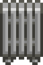

Heizgerät
Zur Navigation springen
Zur Suche springen
| Heizgerät | |
|  | |
| Hält deine Tiere im Winter warm und glücklich. | |
| Information | |
| Kosten: |
|
| Verkauft durch: | Marnies Ranch |
Das Heizgerät ist ein Werkzeug um Tiere während des Winters warm und glücklich zu halten. Es kann von Marnies Ranch für  2.000 G gekauft werden. Man erhält ein Heizgerät als Belohnung bei Erfüllung des
2.000 G gekauft werden. Man erhält ein Heizgerät als Belohnung bei Erfüllung des  Futterbündel am Schwarzen Brett.
Futterbündel am Schwarzen Brett.
Das Heizgerät beeinflusst die Stimmung (nicht die Freundschaft ) eines Tieres während des Winters. Ein Heizgerät reicht für den Effekt aus, weitere Heizgeräte haben keinen Nutzen.
Kann das Tier ein Gebäude mit einem Heizgerät betreten, dann steigert sich die Stimmung nach 18:00 Uhr, alle 10 Spielminuten um 10 Punkte, bis zu einem Maximum von 255 Punkte, oder bis der Spieler schlafen geht.
| Werkzeuge | |
|---|---|
| Hofarbeit | Äxte • Gießkannen • Goldene Sense • Hacken • Mülleimer • Sense • Spitzhacken |
| Fischen | Bambusstange • Fiberglasangel • Iridiumangel • Krabbenreuse • Übungsangel |
| Andere | Auto-Streichler • Automatischer Greifer • Brutkasten • Einfülltrichter • Heizgerät • Kupferpfanne • Melkkübel • Schafschere • Straußenbrutkasten |